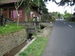
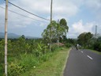

Resor · 2010-10-14 @ 13:52:37 Allmänt Permalink
Mot nordkusten
På väg upp ur kratern igen, till Penelokan, stannar jag flera gånger. Det här är ett väldigt vackert ställe!!
Då och då kastar jag i en liter soppa från något skjul där de har bensinen på småflaskor, portionsförpackade. 4kr/litern.
Jag börjar kunna hänga med barnen som skjutsar med damsadel nu och slutklämmen är nära en timme nerför till Singaraja på bra asfaltsväg och ligger bredvid nån som kan det här hela vägen ner. Vi tutar och vinkar när vi skiljs vid kusten.
Skön körning! Vilket ställe för tvåhjulssemester!
Bara en olycka, en lastbil som vält ut i diket, ingen stor grej.
Nära Lovina (Lopina) börjar det, försöken att ragga upp mig till det ena eller andra, redan i trafiken när det rullar! Jag vill inte prata när jag kör, jag vill orientera mig själv först.
Nonchar och kör genom Lovina och börjar bakifrån. Första stället, resort dyrt (290kr/natt), andra stället "Home Stay". Jag frågar redan på gatan om dom har för 100.000, Yes Sir, only 70.000. Kollar rummet och där bor jag nu!
Nu är det varmt igen. Och jag ska hitta Internet. Och bara sitta någonstans en stund. Och kanske hitta en USB Sladd till kameran.
Ja, gno och stå i :-)
---
Det fanns Wi-Fi som täcker en del av byn, de som sålde access hade kortläsare till SD :-) Bilder!
Byarna är långsmala, längs vägarna. Man ska minst hyra cykel när man bor här. Okj by! Vacker utsikt, berg och hav. Stranden ok, vulkanisk sand. Det finns dyk och snorklingsutflykter, man kan åka upp i bergen vilket är fint!
Eller.. så kan man vara vid ranchen på berget kl 7.30 och rida :-)




Vägen går sedan runt kratern, uppe på kanten så man kan se både ut över Bali och in mot vulkanen. Halvhetsig trafik, småskitigt och jag tänker åka ner och vända i grannkratern, "Danau Bratan", och välja "The road never travelled" enligt LP. Och med lite bök hittar vägen från Catur (Chatuur) via Pelaga till Baturiti (Betonelse på sista "i"), det är en liten krånglig väg (Om man har läst 'Nasses taxi') men genom ett vackert landskap!! Fräschare byar och avslappnade människor.Då och då kastar jag i en liter soppa från något skjul där de har bensinen på småflaskor, portionsförpackade. 4kr/litern.
Jag börjar kunna hänga med barnen som skjutsar med damsadel nu och slutklämmen är nära en timme nerför till Singaraja på bra asfaltsväg och ligger bredvid nån som kan det här hela vägen ner. Vi tutar och vinkar när vi skiljs vid kusten.
Skön körning! Vilket ställe för tvåhjulssemester!
Bara en olycka, en lastbil som vält ut i diket, ingen stor grej.
Nära Lovina (Lopina) börjar det, försöken att ragga upp mig till det ena eller andra, redan i trafiken när det rullar! Jag vill inte prata när jag kör, jag vill orientera mig själv först.
Nonchar och kör genom Lovina och börjar bakifrån. Första stället, resort dyrt (290kr/natt), andra stället "Home Stay". Jag frågar redan på gatan om dom har för 100.000, Yes Sir, only 70.000. Kollar rummet och där bor jag nu!
Nu är det varmt igen. Och jag ska hitta Internet. Och bara sitta någonstans en stund. Och kanske hitta en USB Sladd till kameran.
Ja, gno och stå i :-)
---
Det fanns Wi-Fi som täcker en del av byn, de som sålde access hade kortläsare till SD :-) Bilder!
Byarna är långsmala, längs vägarna. Man ska minst hyra cykel när man bor här. Okj by! Vacker utsikt, berg och hav. Stranden ok, vulkanisk sand. Det finns dyk och snorklingsutflykter, man kan åka upp i bergen vilket är fint!
Eller.. så kan man vara vid ranchen på berget kl 7.30 och rida :-)